Helene Widlund
UX designer – Oslo, Norway
Tools & Skills
Design & Prototyping
 Figma
Figma
 Miro
Miro
 Illustrator
Framer
Illustrator
Framer
Research & Testing
How I Work
My approach to design and collaboration.
Start with the user, not the screen
I don’t open Figma first. I start by understanding who I’m designing for: through interviews, workshops, and mapping out how people actually move through a problem before I decide how to solve it.
Structure before polish
A good experience needs a clear hierarchy before it needs a nice interface. I focus on getting the flow and the information right first, so the visual layer supports it instead of covering for it.
Test early, adjust often
I’d rather show something rough to real users early and be wrong quickly than spend weeks polishing a direction that isn’t landing. Small rounds of testing shape almost everything I design.
Simple, not empty
Removing features isn’t the same as simplifying. I look for ways to organize and prioritize what’s already there, so complexity feels manageable instead of overwhelming.
Experience
Wittario — Project lead
Project lead for a collaborative project combining integration with gamified learning.
SupPassion — UX & Product Designer
Freelance UX and product design work on SupPassion, a live match-room app for football fans.
Wittario — UX Design Intern
Worked on the Wittario project as my graduation project for university.
Education
Bachelor’s in UX Design
Bachelor’s in History
Contact
Email: helene.widUX@outlook.com
LinkedIn: linkedin.com/in/helenewid
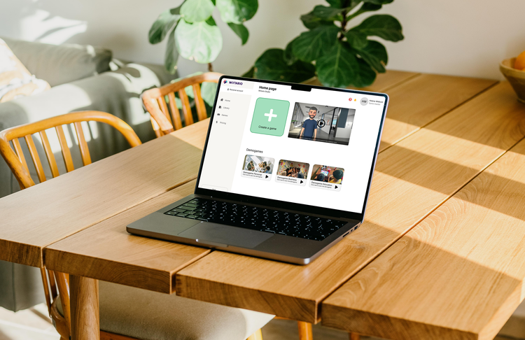


The challenge
Wittario’s game creation experience had become difficult to navigate as more functionality was added. Users had access to the features they needed, but unclear hierarchy and competing actions made it difficult to understand where to begin and what to do next.
My role
As a UX Design Intern, I worked across research, usability testing, interaction design and prototyping to identify friction in the existing experience and explore ways to make key workflows clearer.
My process
Research & Discovery
I started this project with a platform analysis of Wittario itself. This way, I could go in with a fresh set of eyes and take on the role of a new user myself to see where and why the users got stuck.
The goal of the discovery phase was to understand where the friction happened in the existing flow.
What I wanted to learn
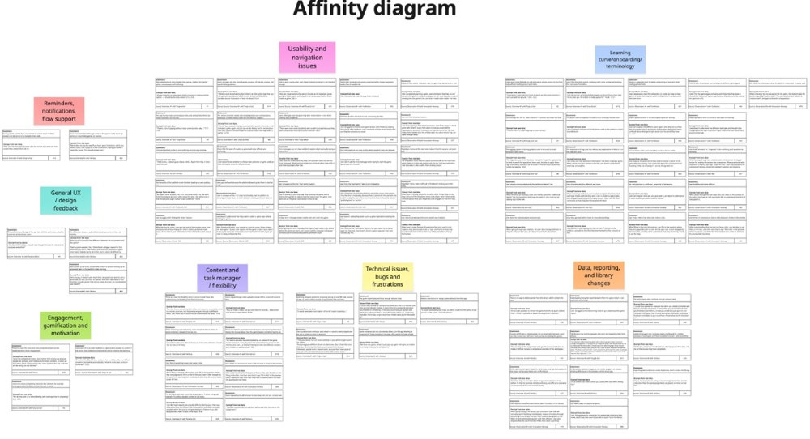
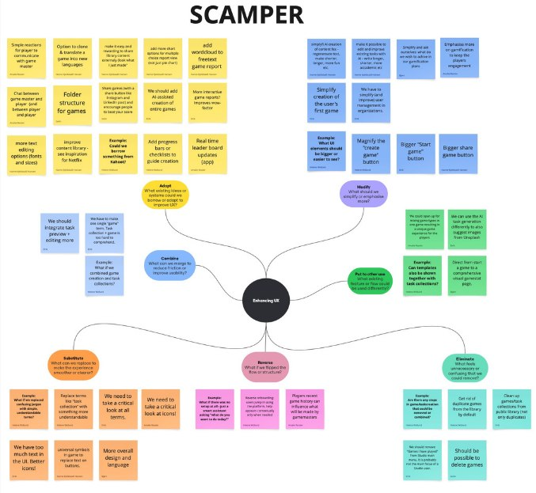
Key insights
ObservationUsers had difficulty identifying where to begin when creating content.
↓
InsightThe problem wasn’t a lack of functionality, but hierarchy.
↓
Design implicationPrioritise primary actions instead of adding more features.
ObservationInformation and actions competed for attention within the same screen during game creation.
↓
InsightWhen everything is presented with equal weight, users struggle to know what to focus on first.
↓
Design implicationReduce visual noise and give primary actions more visual weight than secondary ones.
ObservationUsers already had access to the functionality they needed, but still struggled to complete tasks.
↓
InsightMissing features weren’t the issue. The real problem was usability and clarity.
↓
Design implicationFocus on improving existing flows rather than expanding scope with new functionality.
Design decisions
Based on these insights, I sketched early concepts before moving into higher-fidelity design, focused on giving key actions a clearer hierarchy.
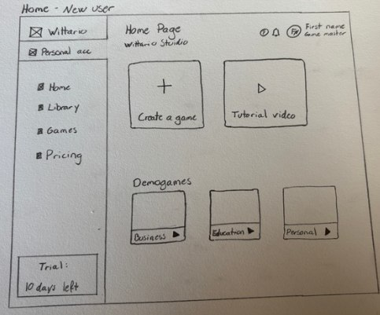
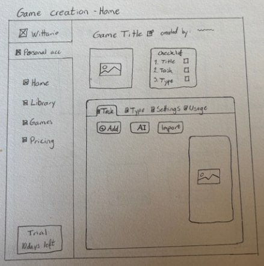

The homepage
Usability testing showed users hesitated on the old dashboard because three equally-weighted cards gave no clear sense of what to do first. I redesigned the homepage around a single primary action, with a stronger visual hierarchy that gives the layout a clearer sense of progression and makes the information easier to scan.
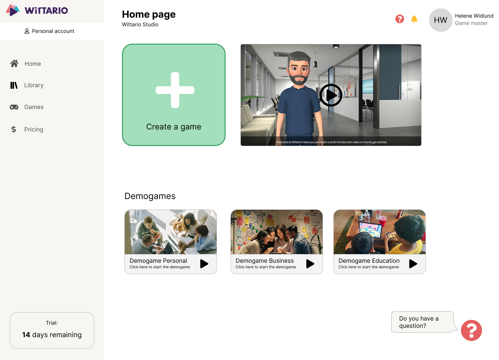
The redesigned homepage
Game creation
Interviews and testing showed that competing actions during game creation made it unclear what to focus on. I restructured the flow so tasks and settings are handled in clearly separated steps, giving the pages a stronger sense of progression and making the information easier to scan.
The new pages for game and task creation
Outcome & reflection
The prototype was tested with both the Wittario team and real users, then presented back to the team along with a full UX research and design report covering the research, concepts, and final prototype. Some of the resulting changes, including the redesigned home page, have since been implemented.
This project made it clear to me that simplifying an experience doesn’t necessarily mean removing functionality. It’s often more important to create a good structure and hierarchy for users to understand so that complex functionalities won’t get overwhelming.
What I’d do differently
I would have liked to involve users even earlier and more frequently throughout the design process, using smaller rounds of testing to validate my design before developing them further.
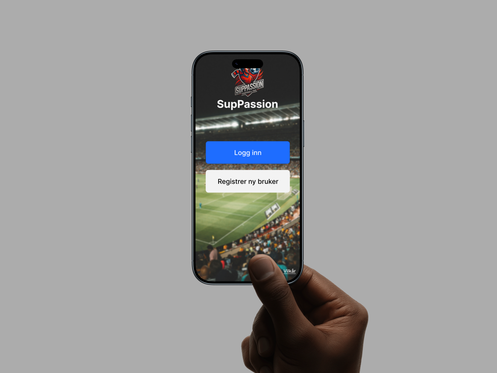
SupPassion is an app that works as a live match room where friends can react, compete and experience a football game together. Supporters can create a group with their friends, communicate through text and audio, participate in playful activities, and follow the match together.
The biggest design challenge of this project was to find a balance between energy and activity without making the experience too noisy. It was important to find a good middle-ground, to make sure not too much would happen at the same time.
My process
Research & Discovery
Without much football-watching experience myself, I had to do extensive research into the user to find out what they would want out of an app like this. I did interviews, held workshops, and created a whole bunch of concepts that I laid out for the user.
Key insights
Combining live content, chat, predictions, competition and group interaction can quickly become too much for the user. It’s important to find a balance.
Predictions, quizzes, AI tactical content and friend leaderboards make participation playful and fun, and gives the user an incentive to stay active.
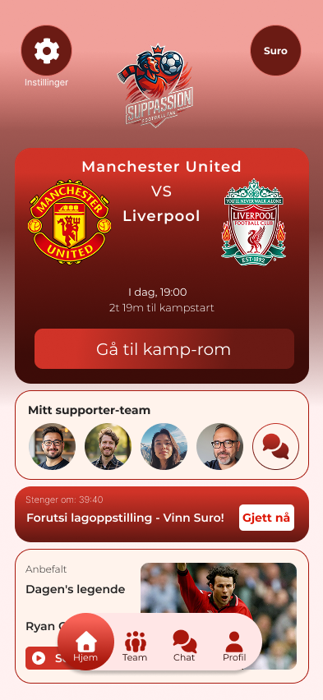
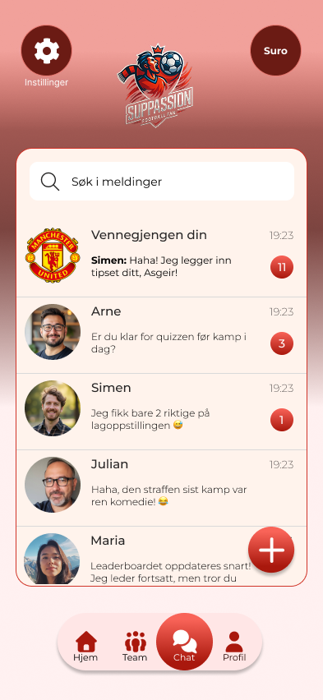
Design decisions
A central matchroom
The experience was organized around a single live space that stays active before, during, and after kick-off.
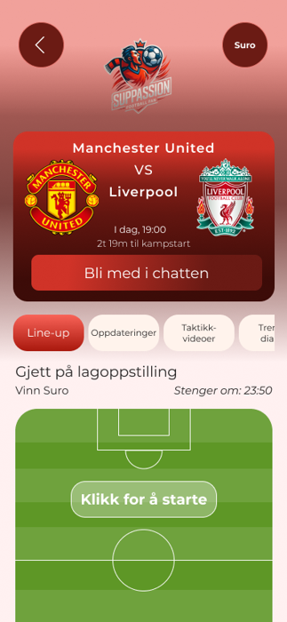
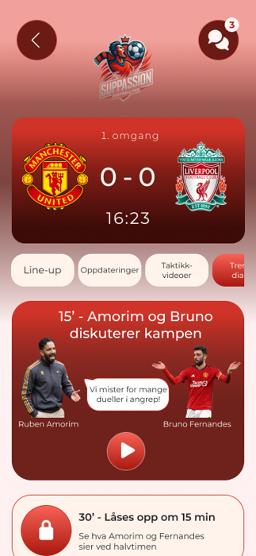
The matchroom before and during a game
Simple gamification
Points, predictions, quizzes and leaderboards were used to encourage participation and friendly competition between friends, without making that the main experience.
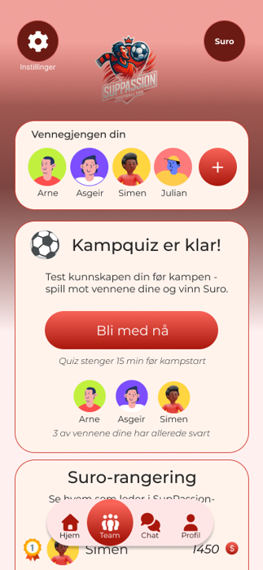
The friend-group page
Outcome & reflection
SupPassion so far has created a strong foundation for a more social and interactive match experience. It is still a work in progress, with more testing and iteration waiting to happen.
The project taught me how to design for community, emotion and live engagement, something I have never done before.
What I’d do differently
I would have liked to bring even more users in during the research phase, to get even more insights into what users might want. I would also have liked to get more input on just the design part, what users liked and didn’t like. More testing is always wanted and needed.